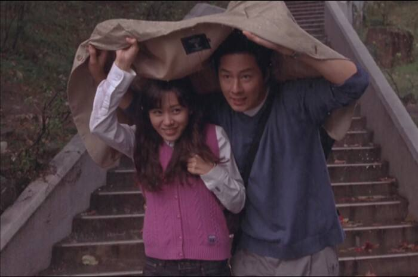
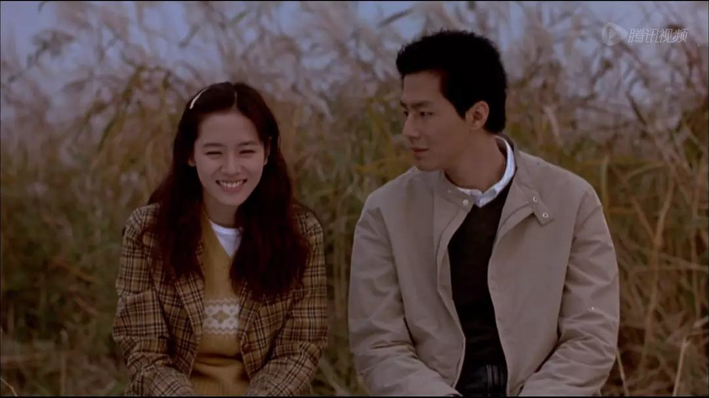
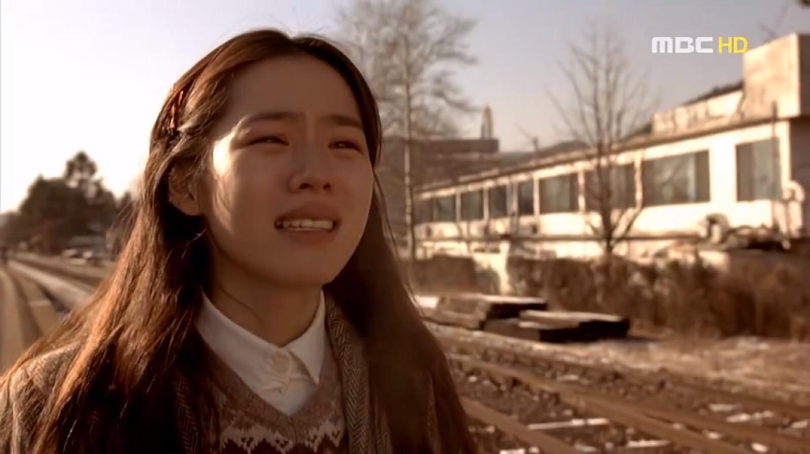

这是一个很老套的爱情故事，老套的让人才看了一半，就已隐约猜到了结局。然而即便如此，心中那柔软的角落依旧会被真挚感人的爱情故事悄然击中，并于唏嘘中感叹缘分的奇妙。两代情缘，六个男女，兜兜转转，猛然中惊觉，历史竟有惊人的相似。
依旧是三角恋，依旧是代替好友写情书，依旧是于大雨中让两颗心越走越近，依旧是在池塘中捕捉萤火虫……甚至就连那定情信物，也还是那条项链！
或许，是上一代的因，冥冥中成就了这一代的果。老天垂怜，让那上一代未了的情缘，在今生得以再续。当年那个淳朴的乡间少年，如今已化为了一滩骨灰；昔日那张娇羞的笑靥，现在也已不复青春的脸。虽然天人永隔，今生无缘，但他们不会忘记，乡间河畔的初次相遇，荒岛上的鬼屋探险，满天繁星下的从容闲游，还有那暮色中，小桥旁，于在池塘中捉萤听风的浪漫温情……那是在最初的最初，第一次莫名的怦然心动，第一次感受爱情的甜蜜，情醉神迷。

虽然人生无常，最终彼此错过，但斗转星移间，那不可思议的缘分，牵引着下一代小儿女的手，红线悄系，纠结缠绕，亦是佳话一段。
情牵一世，缘定三生。
爱情，是一场宿命的轮回。若有来生，人生能再次初遇，希望能依旧继续彼此今生天长地久的誓言。

老一辈的故事越是令人哀婉，小一辈的相爱就越是动人，影片结尾，将两段爱情故事汇合，形成交集，在萤火虫的亮光下， 珠喜和俊河无法在一起的遗憾，由子女缘分般的成全了。郭在容非常擅长拍摄唯美浪漫的精致桥段却又不让人感到落入俗套，影片丰富的层次感和时代感使得两段纯爱故事显得更加的厚重和有力量感，对于编剧和导演郭在容来说，实属不易。

而影片的另一个成功，离不开影片主角的出色演绎。美貌和英俊从来不是打动人的绝对要素，而美好皮囊下深藏着的纯粹的心才使得人物更加的出彩和具有魅力。在影片中，孙艺珍同时饰演了上个年代的母亲珠喜和珠喜的女儿梓希，孙艺珍很好地完成了两个角色间的切换工作，既表现出了母亲珠喜对俊河悲伤却又深沉的爱，又演绎出了珠喜女儿羞涩、灵动、柔软的少女内心。孙艺珍因为这部影片，成为了无数人心目中的初恋标杆，因为影片中的她清纯、干净而又勇敢、美好。
好在缘分没有因此而结束，反而得到了温暖的延续。珠喜的女儿最终和自己心仪的男孩依靠到了一起，而这个男孩却刚好是俊河的儿子。两代人的情感纠缠，没能在上一代实现的美好，却在下一代绽放了幸福之光。假如爱有天意，这或许就是对爱情最厚实的奖赏。